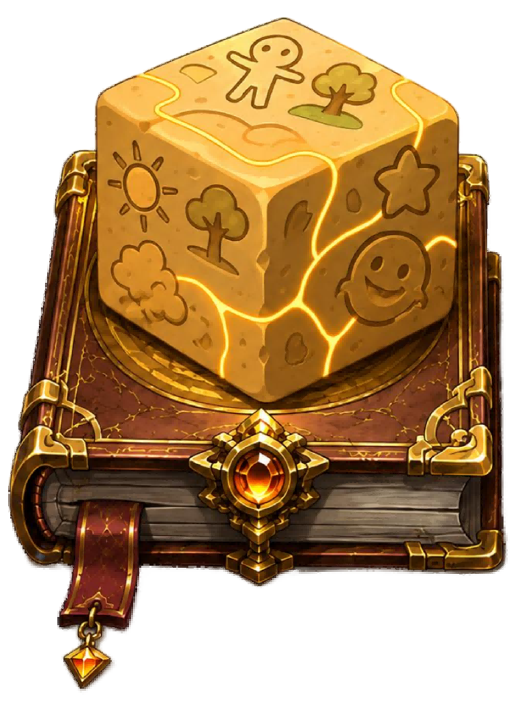

本课程旨在提供一个开放式的自由创作环境。在这里，学生可以自由体验并比较多种最新的前沿 AI 模型（涵盖文本生成、图像生成等不同领域），在无限制的“沙盒”中尽情释放想象力，进行创意实践。
目标：体验最新图像生成模型，探索文本到图像的创意转换。
目标：体验 DeepSeek 强大的语言推理与文本生成能力。
目标：体验 Seedream 系列模型，探索多模态 AI 的创作可能。
目标：体验通义千问模型的高效文本理解与复杂任务生成能力。
目标：体验豆包（Doubao）模型的语言特色与趣味互动创作。
目标：通过万相模型探索高级图像生成的潜力，实现精准画面控制。
目标：体验元宝大模型的多场景应用能力与思维发散属性。
目标：通过 Kimi 体验长文本分析与大容量信息提取能力。
目标：体验 MiniMax 模型在特定语义环境中的角色扮演与创作特点。
目标：体验可灵模型（Kling）探索更前沿的 AI 动态视觉与内容生成能力。